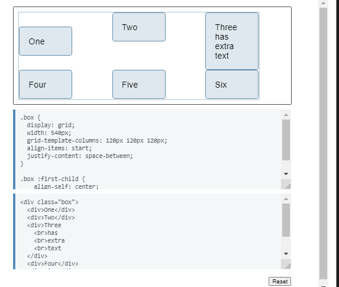
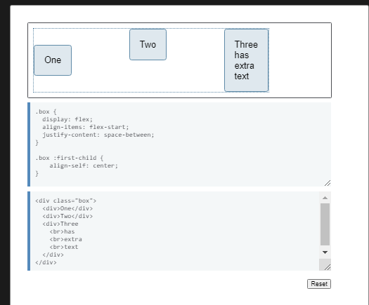
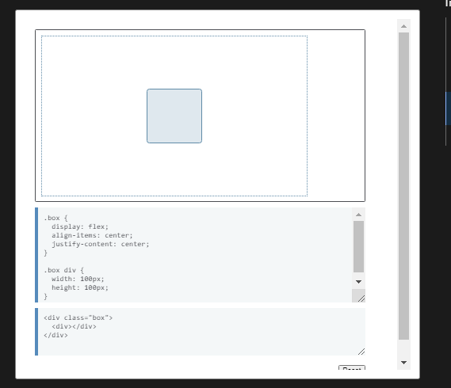
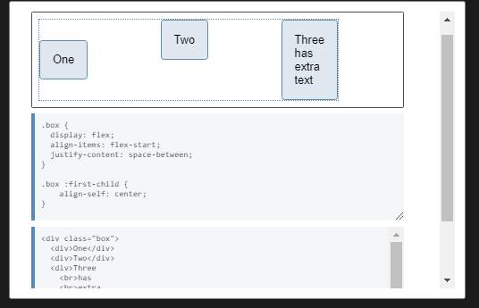
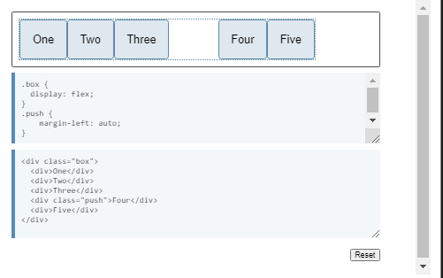
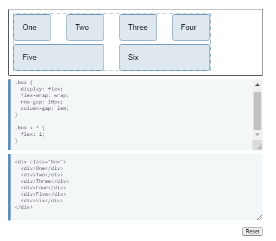
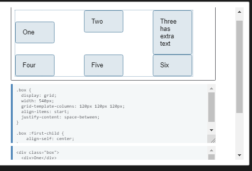
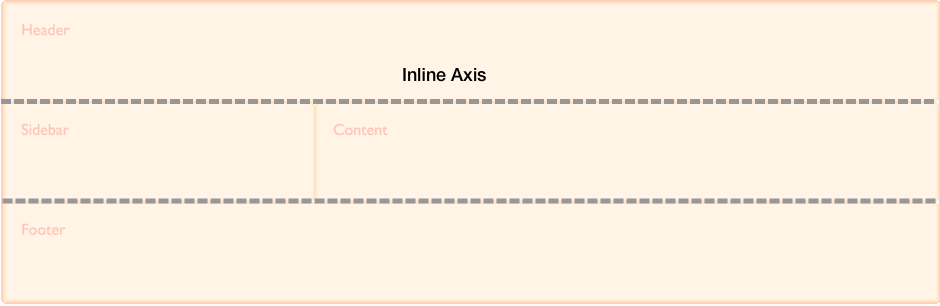
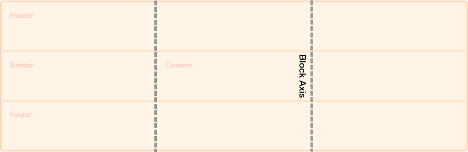

A continuación se mostraran los elementos
más populares dentro del lenguaje de estilo CSS
especificamente la versión CSS3.
Ejemplos:
CSS grid layout alignment example
In this example using Grid Layout, there is extra space in the grid
container after laying out the fixed width tracks on the inline
(main) axis. This space is distributed using justify-content. On the
block (cross) axis the alignment of the items inside their grid
areas is controlled with align-items. The first item overrides the
align-items value set on the group by setting align-self to center.

Flexbox Alignment Example
In this example, three flex items are aligned on the main axis using
justify-content and on the Cross Axis using align-items. The first
item overrides the align-items set on the group by setting
align-self to center.

Box alignment for block, absolutely positioned and table layout
The Box Alignment Specification details how alignment works in
various layout methods. In this page we explore how box alignment
works in the context of block layout, including floated, positioned,
and table elements. As this page aims to detail things which are
specific to block layout and box alignment, it should be read in
conjunction with the main Box Alignment page, which details the
common features of box alignment across layout methods.
align-content and justify-content
The justify-content property does not apply to block containers or
table cells.
The align-content property applies to the block axis in order to
align the contents of the box within its container. If a content
distribution method such as space-between, space-around or
space-evenly is requested then the fallback alignment will be used,
as the content is treated as a single alignment subject.
justify-self
The justify-self property is used to align an item inside its
containing block on the inline axis.
This property does not apply to floated elements or table cells.
align-self
The align-self property does not apply to block-level boxes
(including floats), because there is more than one item in the block
axis. It also does not apply to table cells.
Absolutely positioned elements
The alignment container is the positioned block, accounting for the
offset values of top, left, bottom, and right. The normal keyword
resolves to stretch, unless the positioned item is a replaced
element, in which case it resolves to start.
Aligning in these layout methods today
As we do not currently have browser support for box alignment in
block layout, your options for alignment are either to use one of
the existing alignment methods or, to make even a single item inside
a container a flex item in order to use the alignment properties as
specified in flexbox.
Alignment of blocks horizontally prior to flexbox was typically
achieved by way of setting auto margins on the block. A margin of
auto will absorb all available space in that dimension, therefore
setting a left and right margin of auto, you can push a block into
the center:
.container {
width: 20em;
margin-left: auto;
margin-right: auto;
}
In table layout, you have access to the vertical-align property to
align the contents of a cell inside that cell.
For many use cases, turning the block container into a flex item
will give you the alignment capability that you are looking for. In
the example below, a container with a single item inside has been
turned into a flex container for the purpose of being able to use
the alignment properties.

Box alignment in Flexbox
The Box Alignment Specification details how alignment works in
various layout methods; on this page, we explore how box alignment
works in the context of Flexbox. As this page aims to detail things
which are specific to Flexbox and box alignment, it should be read
in conjunction with the main Box Alignment page which details the
common features of box alignment across layout methods.
Basic example
In this example, three flex items are aligned on the main axis using
justify-content and on the cross axis using align-items. The first
item overrides the align-items values set on the group by setting
align-self to center.

The axes and flex-direction
Flexbox respects the writing mode of the document, therefore if you
are working in English and set justify-content to flex-end this will
align the items to the end of the flex container. If you are working
with flex-direction set to row, this alignment will be in the inline
direction.
However, in Flexbox you can change the main axis by setting
flex-direction to column. In this case, justify-content will align
items in the block direction. Therefore it is easiest to think about
the main and cross axis when working in Flexbox like so:
-
The main axis = direction set by flex-direction = alignment via
justify-content
-
The cross axis = runs across the main axis = alignment via
align-content, align-self/align-items
Main Axis Alignment
Cross Axis Alignment
- align-self
- align-items
- align-content
There is no justify-self in Flexbox
On the main axis, Flexbox deals with our content as a group. The
amount of space required to lay out the items is calculated, and the
leftover space is then available for distribution. The
justify-content property controls how that leftover space is used.
Set justify-content: flex-end and the extra space is placed before
the items, justify-content: space-around and it is placed either
side of the item in that dimension, etc.
This means that a justify-self property does not make sense in
Flexbox as we are always dealing with moving the entire group of
items around.
On the cross axis align-self makes sense as we potentially have
additional space in the flex container in that dimension, in which a
single item can be moved to the start and end.
Alignment and auto margins
There is a specific use case in Flexbox where we might think that a
justify-self property is what we need, and this is when we want to
split a set of flex items, perhaps to create a split navigation
pattern. For this use case, we can use an auto margin. A margin set
to auto will absorb all available space in its dimension. This is
how centering a block with auto margins works. By setting the left
and right margin to auto, both sides of our block try to take up all
of the available space and so push the box into the center.
By setting a margin of auto on one item in a set of flex items all
aligned to start, we can create a split navigation. This works well
with Flexbox and the alignment properties. As soon as there is no
space available for the auto margin, the item behaves in the same
way as all the other flex items and shrinks to try to fit into
space.

The gap properties
Creating fixed size gaps between items
On the main axis, the column-gap property creates fixed size gaps
between adjacent items.
On the cross axis the row-gap property creates spacing between
adjacent flex lines, therefore flex-wrap must also be set to wrap
for this to have any effect.

Box alignment in grid layout
The Box Alignment specification details how alignment works in
various layout methods. On this page we explore how box alignment
works in the context of CSS Grid Layout.
As this page aims to detail things which are specific to CSS Grid
Layout and Box Alignment, it should be read in conjunction with the
main Box Alignment page which details the common features of box
alignment across layout methods.
Basic example
In this example using grid layout, there is extra space in the grid
container after laying out the fixed width tracks on the inline
(main) axis. This space is distributed using justify-content. On the
block (cross) axis the alignment of the items inside their grid
areas is controlled with align-items. The first item overrides the
align-items value set on the group by setting align-self to center.

Grid axes
As a two-dimensional layout method, when working with grid layout we
always have two axes on which to align our items. We have access to
all of the box alignment properties to help us achieve this.
The inline axis is the axis that corresponds to the direction that
words in a sentence would run in the writing mode used. Therefore,
in a horizontal language such as English or Arabic the inline
direction runs horizontally. Should you be in a vertical writing
mode the inline axis will run vertically.

To align things on the inline axis you use the properties that start
with justify-, justify-content, justify-items and justify-self.
The block axis crosses the inline axis in the direction that blocks
are displayed down the page — for example paragraphs in English are
displayed one below the other vertically. This, therefore is the
block dimension.
To align things on the block axis you use the properties that start
with align-, align-content, align-items and align-self.

Self alignment
- justify-self
- align-self
- place-self
- justify-items
- align-items
- place-items
These properties deal with aligning the item inside the grid area it
is placed into. The properties align-items and justify-items are
applied to the grid container and set the align-self and
justify-self properties as a group. This means that you can set
alignment for all of your grid Items at once, then override any
items that need a different alignment by applying the align-self or
justify-self property to the rules for the individual grid Items.
The initial value for align-self and justify-self is stretch so the
item will stretch over the entire grid area. The exception to this
rule is where the item has an intrinsic aspect ratio, for example an
image. In this case the item will be aligned to start in both
dimensions in order that the image is not distorted.
Content alignment
- justify-content
- align-content
- place-content
These properties deal with aligning the tracks of the grid when
there is extra space to distribute. This scenario will occur if the
tracks that you have defined total less than the total width of the
grid container.
Gap and legacy grid-gap properties
The Grid specification originally contained the definition for the
properties grid-row-gap, grid-column-gap and grid-gap. These have
since been moved into the Box Alignment specification and renamed to
row-gap, column-gap, and gap. This allows them to be used for other
layout methods where a gap between items makes sense.
The updated properties have not yet been implemented in all
browsers. Therefore, to use the gap properties in grid layout, you
should use the grid-row-gap, grid-column-gap and grid-gap versions
to ensure full compatibility. You could double up the properties and
use both as you would for vendor prefixes.
Box alignment in Multi-column Layout
The Box Alignment Specification details how alignment works in
various layout methods; on this page we explore how Box Alignment
works in the context of Multi-column Layout. As this page aims to
detail things which are specific to Multi-column Layout and Box
Alignment, it should be read in conjunction with the main Box
Alignment page which details the common features of Box Alignment
across layout methods.
In multi-column layout the alignment container is the content box of
the multicol container. The alignment subject is the column box. The
properties which apply to multi-column layouts are detailed below.
align-content and justify-content
The align-content property applies to the block axis and
justify-content to the inline axis. Any spacing added to the columns
due to use of space distribution will be added to the gap between
the columns, therefore making the gap larger than might be specified
by the column-gap property.
Using a value of justify-content other than normal or stretch will
cause column boxes to display at the column-width specified on the
multicol container, and the remaining space distributed according to
the value of justify-content.
column-gap
The column-gap property was specified in earlier versions of the
multiple-column layout specification, and has now been unified with
the gap properties for other layout methods in box alignment. While
other layout methods treat the initial value of column-gap as 0
multicol treats it as 1em, as in general you would not want to have
no gap between columns.